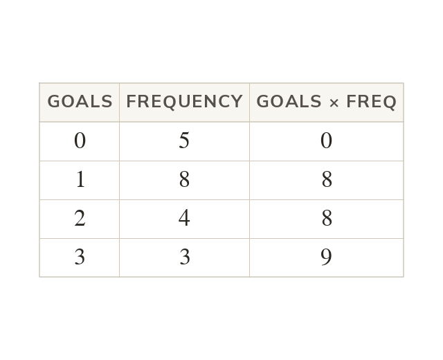

A table is a list in short
Each value occurs as many times as its frequency says. So goal with frequency means eight matches with goal. Their total is value × frequency: goals.
Each value occurs as many times as its frequency says, so goal with frequency means eight matches with goal. Their total is value × frequency, goals.